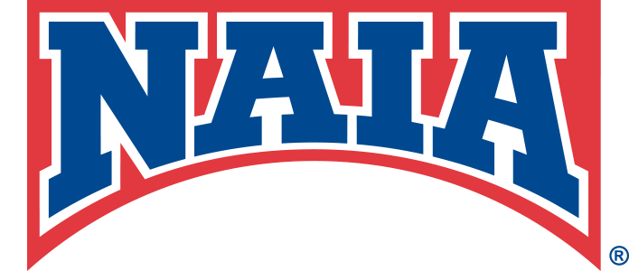

51
Programs Represented
8
Active Conferences
732
Championship Wrestlers
282
All-Americans (Top 8)
Explore NAIA women’s wrestling programs, team national achievements, and complete athlete rosters across all championship seasons.

Explore collegiate programs that have competed in the NAIA Women’s Wrestling National Championships. Use the search bar or conference filter to quickly find any school, or click “View Roster” to inspect its full roster and wrestler records.
| School | Conference | Location | Qualifiers | All-Americans | Total Points | Seasons | Roster |
|---|---|---|---|---|---|---|---|
| Life | Mid-South Conference | Marietta, GA | 48 | 🏆 6 Champs 34 AAs | 642.5 | 2026, 2025, 2024, 2023 | |
| Grand View | Heart of America Athletic Conference | Des Moines, IA | 47 | 29 All-Americans | 513.0 | 2026, 2025, 2024, 2023 | |
| Southern Oregon | Cascade Collegiate Conference | Ashland, OR | 34 | 🏆 6 Champs 18 AAs | 385.0 | 2026, 2024, 2023 | |
| Menlo | Cascade / Independent | Atherton, CA | 24 | 🏆 1 Champ 18 AAs | 300.5 | 2024, 2023 | |
| Providence | Cascade Collegiate Conference | Great Falls, MT | 33 | 🏆 2 Champs 17 AAs | 296.5 | 2026, 2024, 2023 | |
| Cumberlands | Mid-South Conference | Williamsburg, KY | 40 | 🏆 1 Champ 16 AAs | 310.5 | 2026, 2025, 2024, 2023 | |
| William Penn | Heart of America Athletic Conference | Oskaloosa, IA | 25 | 🏆 7 Champs 12 AAs | 272.5 | 2026, 2024, 2023 | |
| Texas Wesleyan | KCAC / SAC | Fort Worth, TX | 26 | 🏆 1 Champ 12 AAs | 234.0 | 2026, 2024, 2023 | |
| Indiana Tech | Mid-South Conference | Fort Wayne, IN | 38 | 12 All-Americans | 224.0 | 2026, 2025, 2024, 2023 | |
| Campbellsville | Mid-South Conference | Campbellsville, KY | 34 | 9 All-Americans | 188.5 | 2026, 2025, 2024, 2023 | |
| Doane | Great Plains Athletic Conference | Crete, NE | 29 | 🏆 3 Champs 9 AAs | 178.5 | 2026, 2025, 2024, 2023 | |
| Missouri Baptist | Heart of America Athletic Conference | St. Louis, MO | 21 | 🏆 1 Champ 8 AAs | 143.5 | 2026, 2024, 2023 | |
| Baker | Heart of America Athletic Conference | Baldwin City, KS | 22 | 🏆 1 Champ 7 AAs | 133.5 | 2026, 2025, 2024, 2023 | |
| Hastings | Great Plains Athletic Conference | Hastings, NE | 28 | 7 All-Americans | 113.5 | 2026, 2025, 2024, 2023 | |
| Missouri Valley | Heart of America Athletic Conference | Marshall, MO | 27 | 6 All-Americans | 111.0 | 2026, 2024, 2023 | |
| Oklahoma City | KCAC / SAC | Oklahoma City, OK | 22 | 6 All-Americans | 97.5 | 2026, 2024, 2023 | |
| Eastern Oregon | Cascade Collegiate Conference | La Grande, OR | 24 | 6 All-Americans | 93.5 | 2026, 2025, 2024, 2023 | |
| Ottawa | KCAC / SAC | Ottawa, KS | 20 | 6 All-Americans | 83.5 | 2026, 2024, 2023 | |
| Central Methodist | Heart of America Athletic Conference | Fayette, MO | 19 | 🏆 1 Champ 5 AAs | 107.5 | 2026, 2025, 2024, 2023 | |
| Iowa Wesleyan | Heart of America | Mount Pleasant, IA | 11 | 🏆 1 Champ 5 AAs | 92.5 | 2023 | |
| Lindsey Wilson | Mid-South Conference | Columbia, KY | 11 | 5 All-Americans | 77.0 | 2026 | |
| Wayland Baptist | KCAC / SAC | Plainview, TX | 21 | 🏆 1 Champ 4 AAs | 112.5 | 2026, 2024, 2023 | |
| Evergreen State | Cascade Collegiate Conference | Olympia, WA | 7 | 4 All-Americans | 65.5 | 2026, 2025 | |
| Brewton Parker | Mid-South Conference | Mount Vernon, GA | 7 | 3 All-Americans | 52.5 | 2024, 2023 | |
| Dickinson State | Heart of America / Independent | Dickinson, ND | 10 | 🏆 2 Champs 2 AAs | 62.5 | 2026, 2025, 2024 | |
| Midland | Great Plains Athletic Conference | Fremont, NE | 11 | 2 All-Americans | 46.5 | 2026, 2024, 2023 | |
| Vanguard | Cascade Collegiate Conference | Costa Mesa, CA | 12 | 2 All-Americans | 42.5 | 2024, 2023 | |
| Lourdes | Mid-South Conference | Sylvania, OH | 4 | 🏆 1 Champ 2 AAs | 40.0 | 2024, 2023 | |
| Jamestown | Great Plains Athletic Conference | Jamestown, ND | 10 | 2 All-Americans | 38.5 | 2025, 2024, 2023 | |
| Avila | KCAC / SAC | Kansas City, MO | 8 | 2 All-Americans | 37.5 | 2026, 2025, 2024, 2023 | |
| St. Mary | KCAC / SAC | Leavenworth, KS | 3 | 2 All-Americans | 35.5 | 2024 | |
| Saint Mary | KCAC / SAC | Leavenworth, KS | 7 | 2 All-Americans | 32.0 | 2026, 2023 | |
| Bismarck State | Heart of America / Independent | Bismarck, ND | 3 | 2 All-Americans | 25.5 | 2026 | |
| Waldorf | Great Plains Athletic Conference | Forest City, IA | 7 | 1 All-American | 34.0 | 2026, 2024, 2023 | |
| Friends | KCAC / SAC | Wichita, KS | 8 | 1 All-American | 27.0 | 2026, 2025, 2024, 2023 | |
| Siena Heights | Mid-South Conference | Adrian, MI | 4 | 1 All-American | 26.5 | 2024, 2023 | |
| Evergreen | Cascade Collegiate Conference | Olympia, WA | 4 | 1 All-American | 21.5 | 2024 | |
| Arizona Christian | Cascade Collegiate Conference | Glendale, AZ | 1 | 1 All-American | 14.0 | 2026 | |
| St Andrews | Mid-South Conference | Laurinburg, NC | 1 | 1 All-American | 11.0 | 2023 | |
| Jarvis Christian | KCAC / SAC | Hawkins, TX | 3 | — | 9.5 | 2024, 2023 | |
| Brewton-Parker | Mid-South Conference | Mount Vernon, GA | 1 | — | 3.0 | 2025 | |
| Montreat | Mid-South Conference | Montreat, NC | 4 | — | 3.0 | 2026, 2024, 2023 | |
| Rochester Christian | Mid-South Conference | Rochester Hills, MI | 1 | — | 3.0 | 2026 | |
| York | KCAC / SAC | York, NE | 3 | — | 3.0 | 2026, 2024, 2023 | |
| Westcliff | Cascade Collegiate Conference | Irvine, CA | 2 | — | 2.5 | 2026 | |
| William Woods | Heart of America Athletic Conference | Fulton, MO | 2 | — | 2.5 | 2026 | |
| St. Andrews | Mid-South Conference | Laurinburg, NC | 1 | — | 1.5 | 2024 | |
| Dakota Wesleyan | Great Plains Athletic Conference | Mitchell, SD | 1 | — | 0.0 | 2025 | |
| Georgetown | Mid-South Conference | Georgetown, KY | 1 | — | 0.0 | 2026 | |
| Morningside | Great Plains Athletic Conference | Sioux City, IA | 1 | — | 0.0 | 2024 | |
| Rio Grande | Mid-South Conference | Rio Grande, OH | 1 | — | 0.0 | 2026 |
Filter and search individual student-athlete records, national placements, and points scored by institution and championship year.
| Wrestler | School | Weight Class | Place | Record (W-L) | Points Scored | Season |
|---|---|---|---|---|---|---|
| Kayla McNatt | Arizona Christian | 110 lbs | 5th | 3-2 | 14.0 | 2026 |
| Alexis Hatfield | Avila | 103 lbs | 5th | 6-2 | 16.0 | 2025 |
| Markayla Lottie | Avila | 109 lbs | — | 0-2 | 0.0 | 2023 |
| Markayla Lottie | Avila | 116 lbs | — | 0-2 | 0.0 | 2024 |
| Nicole Redmond | Avila | 131 lbs | — | 0-2 | 0.0 | 2025 |
| Byanca Cook | Avila | 136 lbs | — | 0-2 | 0.0 | 2023 |
| Jaclyn Riedinger | Avila | 138 lbs | — | 0-2 | 0.0 | 2025 |
| Shan Briggs | Avila | 191 lbs | — | 0-2 | 0.0 | 2024 |
| Haley Ward | Avila | 207 lbs | 🥈 2nd Place | 4-1 | 21.5 | 2026 |
| Kylee Slyter | Baker | 109 lbs | — | 2-2 | 5.5 | 2024 |
| Kylie Robledo | Baker | 110 lbs | 4th | 5-2 | 14.5 | 2026 |
| Katherine Heath | Baker | 116 lbs | 🥉 3rd Place | 4-1 | 19.0 | 2024 |
| Kylie Robledo | Baker | 116 lbs | — | 2-2 | 4.0 | 2023 |
| Katherine Heath | Baker | 116 lbs | — | 1-2 | 2.5 | 2023 |
| Katherine Heath | Baker | 117 lbs | 7th | 4-2 | 11.0 | 2025 |
| Chloe Herrick | Baker | 117 lbs | — | 2-2 | 6.0 | 2026 |
| Kylie Robledo | Baker | 124 lbs | — | 0-2 | 0.0 | 2025 |
| Olivia Branson | Baker | 130 lbs | — | 1-2 | 1.0 | 2023 |
| Aileya Sath | Baker | 131 lbs | — | 0-2 | 0.0 | 2026 |
| Abbie Jones | Baker | 136 lbs | — | 0-2 | 0.0 | 2023 |
| Jade Martin | Baker | 138 lbs | — | 0-2 | 0.0 | 2025 |
| Kaylynn Albrecht | Baker | 155 lbs | 🥇 1st Place | 4-0 | 25.5 | 2023 |
| Hailee Crosland | Baker | 160 lbs | — | 1-2 | 3.0 | 2026 |
| Jaclyn Daley | Baker | 170 lbs | — | 2-2 | 1.5 | 2024 |
| Jannell Avila | Baker | 180 lbs | 🥉 3rd Place | 4-1 | 17.5 | 2025 |
| Margaret Jordan | Baker | 180 lbs | — | 2-2 | 3.5 | 2026 |
| Johanna Carrasco | Baker | 180 lbs | — | 0-2 | 0.0 | 2026 |
| Nevaeh Wardlow | Baker | 180 lbs | — | 0-2 | 0.0 | 2025 |
| Elisa Robinson | Baker | 191 lbs | 8th | 3-3 | 11.0 | 2024 |
| Jannell Avila | Baker | 191 lbs | 7th | 3-2 | 8.0 | 2024 |
| Madeleine Stone | Baker | 207 lbs | — | 0-2 | 0.0 | 2026 |
| Lakota Rogers | Bismarck State | 117 lbs | — | 0-2 | 0.0 | 2026 |
| Rei Ogden | Bismarck State | 124 lbs | 4th | 4-2 | 15.5 | 2026 |
| Alexis Schneider | Bismarck State | 131 lbs | 7th | 4-2 | 10.0 | 2026 |
| Jamesa Robinson | Brewton Parker | 116 lbs | 8th | 3-3 | 7.0 | 2023 |
| Alesandra Burgos | Brewton Parker | 116 lbs | — | 0-2 | 0.0 | 2023 |
| Jamesa Robinson | Brewton Parker | 116 lbs | — | 0-2 | 0.0 | 2024 |
| Leidaly Rivera | Brewton Parker | 136 lbs | 🥉 3rd Place | 4-1 | 17.0 | 2023 |
| Migdayls Ramos | Brewton Parker | 143 lbs | — | 1-2 | 1.5 | 2023 |
| India Page | Brewton Parker | 155 lbs | 🥉 3rd Place | 4-1 | 19.0 | 2023 |
| Katelyn Lewis | Brewton Parker | 170 lbs | — | 3-2 | 8.0 | 2023 |
| Jamesa Robinson | Brewton-Parker | 117 lbs | — | 1-2 | 3.0 | 2025 |
| Riley Banyas | Campbellsville | 101 lbs | — | 1-2 | 2.0 | 2024 |
| Gabrielle Medieros | Campbellsville | 101 lbs | — | 0-2 | 0.0 | 2023 |
| Makennah Craft | Campbellsville | 103 lbs | 🥉 3rd Place | 5-1 | 17.0 | 2026 |
| Kelsey Bilz | Campbellsville | 109 lbs | — | 1-2 | 4.0 | 2023 |
| Gabrielle Medeiros | Campbellsville | 109 lbs | — | 0-2 | 0.0 | 2024 |
| Icart Galumette | Campbellsville | 116 lbs | 5th | 4-2 | 15.5 | 2024 |
| Shae Reisel | Campbellsville | 116 lbs | — | 0-2 | 0.0 | 2023 |
| Icart Galumette | Campbellsville | 117 lbs | 8th | 3-3 | 8.0 | 2025 |
| Cameron Ortiz | Campbellsville | 123 lbs | — | 1-2 | 3.0 | 2024 |
| Jacqueline Ghent | Campbellsville | 123 lbs | — | 1-2 | 1.0 | 2023 |
| Josie Davis | Campbellsville | 123 lbs | — | 0-2 | 0.0 | 2024 |
| Addison Messerly | Campbellsville | 124 lbs | — | 1-2 | 2.5 | 2026 |
| Angela Vitiritti | Campbellsville | 130 lbs | — | 2-2 | 5.5 | 2023 |
| Olivia Messerly | Campbellsville | 130 lbs | — | 2-2 | 3.5 | 2024 |
| Cameron Ortiz | Campbellsville | 131 lbs | — | 1-2 | 2.5 | 2025 |
| Olivia Messerly | Campbellsville | 131 lbs | — | 2-2 | 2.5 | 2025 |
| Olivia Messerly | Campbellsville | 131 lbs | — | 1-2 | 1.0 | 2026 |
| Taylor Howell | Campbellsville | 136 lbs | — | 2-2 | 4.0 | 2023 |
| Addison Messerly | Campbellsville | 136 lbs | — | 1-2 | 2.0 | 2024 |
| Gabriella Perez | Campbellsville | 136 lbs | — | 0-2 | 0.0 | 2024 |
| Gabriella Perez | Campbellsville | 138 lbs | — | 2-2 | 4.0 | 2025 |
| Addison Messerly | Campbellsville | 138 lbs | — | 1-2 | 2.5 | 2025 |
| Emma Walker | Campbellsville | 143 lbs | 4th | 4-2 | 20.0 | 2023 |
| Emma Walker | Campbellsville | 143 lbs | 🥈 2nd Place | 3-1 | 18.0 | 2024 |
| Brelane Huber | Campbellsville | 143 lbs | — | 1-2 | 3.0 | 2023 |
| Gabriella Perez | Campbellsville | 145 lbs | — | 1-2 | 2.0 | 2026 |
| Kendra Thompson | Campbellsville | 155 lbs | 7th | 3-2 | 12.0 | 2023 |
| Kendra Thompson | Campbellsville | 155 lbs | 8th | 3-3 | 11.0 | 2024 |
| Sierra Chavez | Campbellsville | 155 lbs | — | 1-2 | 1.0 | 2023 |
| Kylee Tait | Campbellsville | 160 lbs | — | 1-2 | 3.0 | 2025 |
| Kylee Tait | Campbellsville | 160 lbs | — | 0-2 | 0.0 | 2026 |
| Liliana Vergara | Campbellsville | 170 lbs | 4th | 4-2 | 18.5 | 2023 |
| Liliana Vergara | Campbellsville | 180 lbs | 5th | 3-2 | 14.0 | 2025 |
| Brianna Staebler | Campbellsville | 207 lbs | — | 2-2 | 5.5 | 2025 |
| Zoey Mzeru | Central Methodist | 103 lbs | — | 0-2 | 0.0 | 2026 |
| Victoria Nunez | Central Methodist | 109 lbs | — | 0-2 | 0.0 | 2023 |
| Caitlyn Thorne | Central Methodist | 116 lbs | 🥇 1st Place | 4-0 | 23.0 | 2023 |
| Hannah Hall | Central Methodist | 116 lbs | 7th | 4-2 | 12.0 | 2023 |
| Victoria Nunez | Central Methodist | 117 lbs | — | 1-2 | 2.5 | 2025 |
| Yusneiry Agrazal | Central Methodist | 117 lbs | — | 0-2 | 0.0 | 2026 |
| Allison Hynes | Central Methodist | 123 lbs | — | 2-2 | 3.5 | 2024 |
| Allison Hynes | Central Methodist | 123 lbs | — | 0-2 | 0.0 | 2023 |
| Berlin Kiddoo | Central Methodist | 124 lbs | — | 1-2 | 2.5 | 2026 |
| Skye Realin | Central Methodist | 130 lbs | 5th | 4-2 | 16.0 | 2023 |
| Nonnie Justice | Central Methodist | 130 lbs | — | 0-2 | 0.0 | 2024 |
| Lilly Gough | Central Methodist | 136 lbs | — | 2-2 | 1.5 | 2024 |
| Lilly Gough | Central Methodist | 138 lbs | — | 1-2 | 1.0 | 2025 |
| Emily Neumann | Central Methodist | 138 lbs | — | 0-2 | 0.0 | 2026 |
| Lilly Gough | Central Methodist | 143 lbs | — | 3-2 | 5.5 | 2023 |
| Caitlyn Davis | Central Methodist | 155 lbs | 4th | 3-2 | 15.5 | 2023 |
| Allyssa Johnson | Central Methodist | 160 lbs | — | 1-2 | 2.0 | 2026 |
| Shainne Whited | Central Methodist | 170 lbs | — | 1-2 | 3.5 | 2023 |
| Jaycee Foeller | Central Methodist | 191 lbs | 🥈 2nd Place | 4-1 | 19.0 | 2023 |
| Elizabeth Dosado | Cumberlands | 101 lbs | 4th | 3-2 | 18.0 | 2023 |
| Elizabeth Dosado | Cumberlands | 101 lbs | — | 1-2 | 2.0 | 2024 |
| Angelina Castaneda | Cumberlands | 101 lbs | — | 0-2 | 0.0 | 2023 |
| Angelina Casteneda | Cumberlands | 103 lbs | 6th | 3-3 | 14.0 | 2025 |
| Dutchess King | Cumberlands | 103 lbs | — | 1-2 | 3.5 | 2025 |
| Gracie Elliott | Cumberlands | 109 lbs | — | 0-2 | 0.0 | 2024 |
| Alexis Medina | Cumberlands | 116 lbs | — | 2-2 | 4.0 | 2023 |
| Shammilka Miranda | Cumberlands | 117 lbs | 🥉 3rd Place | 6-1 | 23.0 | 2025 |
| Kaitlin Castro | Cumberlands | 123 lbs | — | 0-2 | 0.0 | 2024 |
| Katie Gomez | Cumberlands | 124 lbs | 🥈 2nd Place | 4-1 | 20.5 | 2025 |
| Kaitlin Castro | Cumberlands | 124 lbs | — | 1-2 | 4.0 | 2026 |
| Presley Anderson | Cumberlands | 124 lbs | — | 1-2 | 1.0 | 2025 |
| Mary Jane Porter | Cumberlands | 131 lbs | — | 1-2 | 3.0 | 2025 |
| Mary Jane Porter | Cumberlands | 131 lbs | — | 1-2 | 2.5 | 2026 |
| Annabelle Suto | Cumberlands | 131 lbs | — | 0-2 | 0.0 | 2025 |
| Aliyah Yates | Cumberlands | 136 lbs | 5th | 4-2 | 15.0 | 2023 |
| Ruth Jimenez | Cumberlands | 138 lbs | — | 2-2 | 1.5 | 2026 |
| Micah Fisher | Cumberlands | 143 lbs | — | 1-2 | 4.0 | 2024 |
| Alivia Ming | Cumberlands | 145 lbs | 7th | 4-2 | 12.0 | 2025 |
| Genesis Gilmore | Cumberlands | 145 lbs | — | 1-2 | 2.0 | 2026 |
| Alyvia Ming | Cumberlands | 145 lbs | — | 0-2 | 0.0 | 2026 |
| Ariana Pereira | Cumberlands | 155 lbs | — | 0-2 | 0.0 | 2024 |
| Ariana Pereira | Cumberlands | 155 lbs | — | 0-2 | 0.0 | 2023 |
| Micah Fisher | Cumberlands | 160 lbs | 4th | 4-2 | 20.0 | 2025 |
| Micah Fisher-Miller | Cumberlands | 160 lbs | 7th | 4-2 | 13.5 | 2026 |
| Sierra Mefford | Cumberlands | 160 lbs | — | 2-2 | 1.5 | 2026 |
| Dymond Guilford | Cumberlands | 170 lbs | 🥇 1st Place | 4-0 | 25.0 | 2023 |
| Chamira Cooper | Cumberlands | 170 lbs | 6th | 4-3 | 12.5 | 2024 |
| Chamira Cooper | Cumberlands | 170 lbs | — | 3-2 | 7.0 | 2023 |
| Saiheron Preciado-Meza | Cumberlands | 170 lbs | — | 1-2 | 3.5 | 2024 |
| Saiheron Preciado-Meza | Cumberlands | 180 lbs | 7th | 3-2 | 10.0 | 2026 |
| Saiheron Preciado-Meza | Cumberlands | 180 lbs | — | 2-2 | 6.0 | 2025 |
| Maquoia Bernabe | Cumberlands | 191 lbs | 4th | 3-2 | 18.0 | 2024 |
| Jesse Kirby | Cumberlands | 191 lbs | 6th | 4-3 | 17.0 | 2023 |
| Naomi Duenas | Cumberlands | 191 lbs | 5th | 5-2 | 17.0 | 2024 |
| Maquoia Bernabe | Cumberlands | 191 lbs | 7th | 3-2 | 12.0 | 2023 |
| Maquoia Bernabe | Cumberlands | 207 lbs | 5th | 4-2 | 11.0 | 2025 |
| Naomi Duenas | Cumberlands | 207 lbs | — | 1-2 | 4.0 | 2026 |
| Naomi Duenas | Cumberlands | 207 lbs | — | 1-2 | 2.5 | 2025 |
| Destiny Marquez | Cumberlands | 207 lbs | — | 0-2 | 0.0 | 2026 |
| Keera Lacock | Dakota Wesleyan | 131 lbs | — | 0-2 | 0.0 | 2025 |
| Jenna Gerhardt | Dickinson State | 110 lbs | — | 2-2 | 3.0 | 2025 |
| Jenna Gerhardt | Dickinson State | 110 lbs | — | 1-2 | 2.0 | 2026 |
| Myriam Riley | Dickinson State | 110 lbs | — | 1-2 | 0.5 | 2026 |
| Larhae Whaley | Dickinson State | 117 lbs | — | 1-2 | 2.5 | 2025 |
| Mikayla Jardine | Dickinson State | 117 lbs | — | 0-2 | 0.0 | 2026 |
| Jazmine Turner | Dickinson State | 124 lbs | — | 1-2 | 3.0 | 2026 |
| Jumoke Adekoye | Dickinson State | 131 lbs | 🥇 1st Place | 5-0 | 26.0 | 2026 |
| Jumoke Adekoye | Dickinson State | 131 lbs | 🥇 1st Place | 5-0 | 25.0 | 2025 |
| Marish Wahl | Dickinson State | 143 lbs | — | 0-2 | 0.0 | 2024 |
| Kiley Hubby | Dickinson State | 160 lbs | — | 1-2 | 0.5 | 2025 |
| Karina Vang | Doane | 101 lbs | 6th | 3-3 | 14.0 | 2023 |
| Karina Vang | Doane | 101 lbs | — | 0-2 | 0.0 | 2024 |
| Karina Vang | Doane | 103 lbs | 7th | 4-2 | 12.0 | 2025 |
| Karina Vang | Doane | 103 lbs | — | 0-2 | 0.0 | 2026 |
| Kimberly Navarette | Doane | 103 lbs | — | 0-2 | 0.0 | 2026 |
| Jaden Breeden | Doane | 110 lbs | — | 0-2 | 0.0 | 2025 |
| Angelica Vicente Gonzalez | Doane | 117 lbs | 8th | 3-3 | 8.5 | 2026 |
| Julia Breeden | Doane | 117 lbs | — | 0-2 | 0.0 | 2025 |
| Mora Peterson | Doane | 117 lbs | — | 0-2 | 0.0 | 2025 |
| Cristelle Rodriguez | Doane | 123 lbs | 🥇 1st Place | 5-0 | 28.0 | 2024 |
| Cristelle Rodriguez | Doane | 124 lbs | 🥇 1st Place | 5-0 | 27.0 | 2025 |
| Cristelle Rodriguez | Doane | 124 lbs | 🥇 1st Place | 4-0 | 26.0 | 2026 |
| Cristelle Rodriguez | Doane | 130 lbs | 🥉 3rd Place | 5-1 | 16.5 | 2023 |
| Ashlee Palimo | Doane | 131 lbs | — | 2-2 | 2.0 | 2025 |
| Ashlee Palimo`o | Doane | 131 lbs | — | 0-2 | 0.0 | 2026 |
| Bridgette Sotomayor | Doane | 136 lbs | — | 0-2 | 0.0 | 2024 |
| Aevri Ciha | Doane | 143 lbs | — | 1-2 | 4.0 | 2023 |
| Bridgette Sotomayor | Doane | 145 lbs | 5th | 5-2 | 15.0 | 2025 |
| Aevri Ciha | Doane | 145 lbs | — | 0-2 | 0.0 | 2025 |
| Bridgette Sotomayor | Doane | 145 lbs | — | 0-2 | 0.0 | 2026 |
| Aspen Barber | Doane | 155 lbs | — | 1-2 | 4.0 | 2024 |
| Aspen Barber | Doane | 160 lbs | 7th | 3-2 | 8.5 | 2025 |
| Lamia Benn | Doane | 160 lbs | — | 0-2 | 0.0 | 2025 |
| Lamia Benn | Doane | 170 lbs | — | 0-2 | 0.0 | 2023 |
| Yazmin Belk | Doane | 180 lbs | — | 1-2 | 3.0 | 2025 |
| Yazmin Belk | Doane | 180 lbs | — | 0-2 | 0.0 | 2026 |
| Kenisha Jacsaint | Doane | 191 lbs | — | 2-2 | 4.0 | 2024 |
| Hailey Romero | Doane | 207 lbs | — | 1-2 | 3.0 | 2025 |
| Jessica Rodriguez | Doane | 207 lbs | — | 1-2 | 3.0 | 2026 |
| Nayeli Flores Roque | Eastern Oregon | 101 lbs | — | 0-2 | 0.0 | 2023 |
| Nayeli Flores Roque | Eastern Oregon | 103 lbs | — | 0-2 | 0.0 | 2025 |
| Stephanie Blankenship | Eastern Oregon | 109 lbs | — | 1-2 | 1.5 | 2023 |
| Nia Avelino | Eastern Oregon | 110 lbs | — | 1-2 | 0.5 | 2025 |
| Telsarina Walter | Eastern Oregon | 110 lbs | — | 0-2 | 0.0 | 2025 |
| Irma Retano | Eastern Oregon | 116 lbs | — | 3-2 | 3.5 | 2024 |
| Paige Chafin | Eastern Oregon | 116 lbs | — | 1-2 | 1.5 | 2023 |
| Irma Retano | Eastern Oregon | 117 lbs | — | 1-2 | 2.5 | 2025 |
| Gloria Diaz | Eastern Oregon | 117 lbs | — | 0-2 | 0.0 | 2026 |
| Paige Chafin | Eastern Oregon | 123 lbs | — | 0-2 | 0.0 | 2024 |
| Kadence Beck | Eastern Oregon | 124 lbs | — | 0-2 | 0.0 | 2025 |
| Kaylee Moore | Eastern Oregon | 130 lbs | 8th | 3-3 | 5.5 | 2023 |
| Anna Rodriguez | Eastern Oregon | 130 lbs | — | 0-2 | 0.0 | 2024 |
| Lexie Garza | Eastern Oregon | 131 lbs | — | 0-2 | 0.0 | 2026 |
| Makenna Duran | Eastern Oregon | 131 lbs | — | 0-2 | 0.0 | 2026 |
| Erin Redford | Eastern Oregon | 136 lbs | 6th | 3-3 | 12.5 | 2023 |
| Liv Wieber | Eastern Oregon | 143 lbs | 5th | 5-2 | 17.5 | 2023 |
| Morgan Shines | Eastern Oregon | 143 lbs | — | 0-2 | 0.0 | 2023 |
| Liv Wieber | Eastern Oregon | 145 lbs | 🥉 3rd Place | 5-1 | 21.5 | 2025 |
| Veil Foreman | Eastern Oregon | 145 lbs | — | 1-2 | 2.5 | 2026 |
| Liv Wieber | Eastern Oregon | 155 lbs | 5th | 3-2 | 13.5 | 2024 |
| Olivia Robinson | Eastern Oregon | 170 lbs | 8th | 4-3 | 8.5 | 2023 |
| Trinity Tafoya | Eastern Oregon | 191 lbs | — | 0-2 | 0.0 | 2024 |
| Kiona Michel | Eastern Oregon | 207 lbs | — | 1-2 | 2.5 | 2026 |
| Nizhoni Tallman | Evergreen | 109 lbs | — | 2-2 | 3.5 | 2024 |
| Ellabelle Taylor | Evergreen | 123 lbs | — | 0-2 | 0.0 | 2024 |
| Erica Grant | Evergreen | 130 lbs | — | 2-2 | 5.0 | 2024 |
| Flor Parker-Borreo | Evergreen | 155 lbs | 6th | 2-3 | 13.0 | 2024 |
| Nizhoni Tallman | Evergreen State | 110 lbs | 8th | 3-3 | 6.5 | 2025 |
| Nizhoni Tallman | Evergreen State | 110 lbs | — | 0-2 | 0.0 | 2026 |
| Ellabelle Taylor | Evergreen State | 124 lbs | — | 2-2 | 2.0 | 2025 |
| Ellabelle Taylor | Evergreen State | 124 lbs | — | 0-2 | 0.0 | 2026 |
| Haley Le | Evergreen State | 138 lbs | 5th | 4-2 | 16.0 | 2026 |
| Flor Parker Borrero | Evergreen State | 160 lbs | 🥉 3rd Place | 5-1 | 23.5 | 2025 |
| Shannon Workinger | Evergreen State | 160 lbs | 🥈 2nd Place | 3-1 | 17.5 | 2026 |
| Kaylynn Martin | Friends | 110 lbs | — | 0-2 | 0.0 | 2026 |
| Gianna Moreno | Friends | 136 lbs | 5th | 5-2 | 18.5 | 2024 |
| Gianna Moreno | Friends | 136 lbs | — | 0-2 | 0.0 | 2023 |
| Gianna Moreno | Friends | 138 lbs | — | 0-2 | 0.0 | 2025 |
| Alexis Means | Friends | 145 lbs | — | 1-2 | 3.0 | 2026 |
| Bailee Hawks | Friends | 155 lbs | — | 2-2 | 5.5 | 2023 |
| (Forfeit) Bailee Nelson | Friends | 180 lbs | — | 0-2 | 0.0 | 2025 |
| Bailee Nelson | Friends | 180 lbs | — | 0-2 | 0.0 | 2026 |
| Jes`Onia Barefield | Georgetown | 124 lbs | — | 0-2 | 0.0 | 2026 |
| Jas Alexander | Grand View | 101 lbs | — | 1-2 | 4.0 | 2023 |
| Judy Sandoval | Grand View | 103 lbs | 🥉 3rd Place | 4-1 | 21.0 | 2025 |
| Lita Cruz | Grand View | 103 lbs | 5th | 3-2 | 12.0 | 2026 |
| Isabelle Apple | Grand View | 103 lbs | 8th | 3-3 | 11.0 | 2026 |
| Devyn Moore | Grand View | 103 lbs | — | 0-2 | 0.0 | 2025 |
| Tristan Nitta | Grand View | 109 lbs | 8th | 3-3 | 11.0 | 2024 |
| Judy Sandoval | Grand View | 109 lbs | — | 0-2 | 0.0 | 2024 |
| Tristan Nitta | Grand View | 110 lbs | 🥉 3rd Place | 6-1 | 25.0 | 2026 |
| Tristan Nitta | Grand View | 110 lbs | 7th | 4-2 | 14.5 | 2025 |
| Lita Cruz | Grand View | 110 lbs | — | 2-2 | 6.0 | 2025 |
| Eliana Martinez | Grand View | 110 lbs | — | 2-2 | 5.5 | 2026 |
| Cailin Campbell | Grand View | 116 lbs | — | 2-2 | 4.5 | 2023 |
| Mayangelie Colon | Grand View | 117 lbs | 4th | 4-2 | 19.5 | 2025 |
| Cailin Campbell | Grand View | 117 lbs | 4th | 4-2 | 19.0 | 2026 |
| Mayangelie Colon | Grand View | 117 lbs | — | 2-2 | 4.5 | 2026 |
| Cailin Campbell | Grand View | 117 lbs | — | 1-2 | 3.5 | 2025 |
| Maya Davis | Grand View | 123 lbs | 🥉 3rd Place | 6-1 | 21.5 | 2023 |
| Maya Davis | Grand View | 123 lbs | 🥈 2nd Place | 4-1 | 19.5 | 2024 |
| Catharine Campbell | Grand View | 123 lbs | 6th | 2-3 | 12.5 | 2023 |
| Catharine Campbell | Grand View | 123 lbs | 8th | 3-3 | 8.5 | 2024 |
| Catharine Campbell | Grand View | 124 lbs | 4th | 5-2 | 19.0 | 2025 |
| Catherine Campbell | Grand View | 124 lbs | 7th | 5-2 | 13.0 | 2026 |
| Maya Davis | Grand View | 124 lbs | 7th | 3-2 | 11.5 | 2025 |
| Maya Davis | Grand View | 124 lbs | — | 3-2 | 6.0 | 2026 |
| Andrea Schlabach | Grand View | 130 lbs | 6th | 3-3 | 11.0 | 2023 |
| Isabella Gonzalez | Grand View | 130 lbs | — | 0-2 | 0.0 | 2023 |
| Andrea Schlabach | Grand View | 136 lbs | 6th | 2-3 | 11.0 | 2024 |
| Alexis Gomez | Grand View | 143 lbs | 🥈 2nd Place | 3-1 | 19.0 | 2023 |
| Madison Diaz | Grand View | 143 lbs | 4th | 3-2 | 14.5 | 2024 |
| Krista Warren | Grand View | 143 lbs | — | 1-2 | 4.0 | 2024 |
| Madison Diaz | Grand View | 145 lbs | 5th | 5-2 | 12.0 | 2026 |
| Krista Warren | Grand View | 145 lbs | — | 1-2 | 4.0 | 2025 |
| Madison Diaz | Grand View | 155 lbs | 8th | 3-3 | 7.0 | 2023 |
| Mahealani Ramirez | Grand View | 155 lbs | — | 2-2 | 4.0 | 2023 |
| Haidyn Snyder | Grand View | 155 lbs | — | 0-2 | 0.0 | 2024 |
| Emmalee Spurgeon | Grand View | 160 lbs | — | 0-2 | 0.0 | 2025 |
| Nicole Olson | Grand View | 160 lbs | — | 0-2 | 0.0 | 2026 |
| Abby McIntyre | Grand View | 170 lbs | 🥈 2nd Place | 4-1 | 23.5 | 2024 |
| Abby McIntyre | Grand View | 170 lbs | 🥉 3rd Place | 4-1 | 17.5 | 2023 |
| Shenita Lawson | Grand View | 170 lbs | 5th | 4-2 | 12.0 | 2023 |
| Andjela Prijovic | Grand View | 180 lbs | 🥈 2nd Place | 4-1 | 21.0 | 2026 |
| Olivia Brown | Grand View | 191 lbs | 🥉 3rd Place | 6-1 | 19.5 | 2024 |
| Olivia Brown | Grand View | 191 lbs | 5th | 4-2 | 13.5 | 2023 |
| Andjela Prijovic | Grand View | 191 lbs | — | 2-2 | 5.5 | 2024 |
| Selena Mares | Grand View | 207 lbs | 5th | 4-2 | 18.0 | 2026 |
| Olivia Brown | Grand View | 207 lbs | 🥉 3rd Place | 5-1 | 17.5 | 2025 |
| Bella Porcelli | Grand View | 207 lbs | — | 2-2 | 6.0 | 2025 |
| Chloe Brewis | Hastings | 110 lbs | 8th | 4-3 | 10.5 | 2026 |
| Raelynn O`Connor | Hastings | 110 lbs | — | 0-2 | 0.0 | 2026 |
| Larissa Kaz | Hastings | 123 lbs | 8th | 3-3 | 9.5 | 2023 |
| Larissa Kaz | Hastings | 123 lbs | — | 3-2 | 6.0 | 2024 |
| Larissa Kaz | Hastings | 131 lbs | 8th | 4-3 | 12.5 | 2025 |
| Larissa Kaz | Hastings | 131 lbs | 8th | 2-3 | 7.0 | 2026 |
| Kaydince Turner | Hastings | 136 lbs | — | 1-2 | 3.5 | 2024 |
| Tabitha Wood | Hastings | 136 lbs | — | 1-2 | 3.5 | 2023 |
| Reagen Gallaway | Hastings | 138 lbs | 4th | 3-2 | 16.0 | 2025 |
| Reagen Gallaway | Hastings | 138 lbs | 7th | 3-2 | 10.0 | 2026 |
| Lisa Hoeflich | Hastings | 138 lbs | — | 0-2 | 0.0 | 2026 |
| Tabitha Wood | Hastings | 138 lbs | — | 0-2 | 0.0 | 2025 |
| Reagen Gallaway | Hastings | 143 lbs | 7th | 4-2 | 12.5 | 2024 |
| Kaydince Turner | Hastings | 143 lbs | — | 2-2 | 6.0 | 2023 |
| Lisa Hoeflich | Hastings | 143 lbs | — | 1-2 | 3.0 | 2023 |
| Lisa Hoeflich | Hastings | 145 lbs | — | 1-2 | 1.0 | 2025 |
| Emma Stice | Hastings | 145 lbs | — | 0-2 | 0.0 | 2026 |
| Emma Stice | Hastings | 145 lbs | — | 0-2 | 0.0 | 2025 |
| Lisa Hoeflich | Hastings | 155 lbs | — | 0-2 | 0.0 | 2024 |
| Isabella Deeds | Hastings | 160 lbs | — | 0-2 | 0.0 | 2025 |
| Jayla Ford | Hastings | 160 lbs | — | 0-2 | 0.0 | 2026 |
| Victoria Guinard | Hastings | 170 lbs | — | 3-2 | 7.5 | 2024 |
| Taylor Rickley | Hastings | 170 lbs | — | 1-2 | 3.0 | 2023 |
| Marissa Patterson | Hastings | 180 lbs | — | 0-2 | 0.0 | 2025 |
| Marissa Patterson | Hastings | 191 lbs | — | 1-2 | 2.0 | 2024 |
| Alexis Llamas | Hastings | 207 lbs | — | 0-2 | 0.0 | 2026 |
| Taylor Rickley | Hastings | 207 lbs | — | 0-2 | 0.0 | 2026 |
| Taylor Rickley | Hastings | 207 lbs | — | 0-2 | 0.0 | 2025 |
| Makayla Young | Indiana Tech | 101 lbs | 7th | 4-2 | 9.5 | 2024 |
| Makayla Young | Indiana Tech | 101 lbs | — | 1-2 | 2.0 | 2023 |
| Sidney Kutzke | Indiana Tech | 101 lbs | — | 0-2 | 0.0 | 2023 |
| Zoey Haney | Indiana Tech | 103 lbs | 🥈 2nd Place | 3-1 | 19.5 | 2026 |
| Makayla Young | Indiana Tech | 103 lbs | 4th | 3-2 | 16.5 | 2025 |
| Makayla Young | Indiana Tech | 103 lbs | — | 2-2 | 3.0 | 2026 |
| Tehani Soares | Indiana Tech | 109 lbs | 5th | 4-2 | 16.0 | 2023 |
| Tehani Soares | Indiana Tech | 109 lbs | 7th | 3-2 | 8.5 | 2024 |
| Tehani Soares | Indiana Tech | 110 lbs | 4th | 4-2 | 14.5 | 2025 |
| Emma Jones | Indiana Tech | 110 lbs | — | 1-2 | 4.0 | 2026 |
| Makenize Smith | Indiana Tech | 110 lbs | — | 1-2 | 1.0 | 2026 |
| Allison Hancher | Indiana Tech | 110 lbs | — | 0-2 | 0.0 | 2025 |
| Emma Jones | Indiana Tech | 116 lbs | — | 1-2 | 4.0 | 2024 |
| Emma Jones | Indiana Tech | 116 lbs | — | 1-2 | 3.0 | 2023 |
| Andrea Hernandez | Indiana Tech | 123 lbs | — | 2-2 | 6.0 | 2023 |
| Isabelle Silva | Indiana Tech | 123 lbs | — | 0-2 | 0.0 | 2024 |
| Rose Kaplan | Indiana Tech | 124 lbs | 🥈 2nd Place | 4-1 | 22.0 | 2026 |
| Rose Kaplan | Indiana Tech | 124 lbs | 6th | 4-3 | 12.0 | 2025 |
| Lola Barkby | Indiana Tech | 124 lbs | 8th | 3-3 | 8.5 | 2026 |
| Ellyana Kuzma | Indiana Tech | 130 lbs | — | 2-2 | 6.0 | 2024 |
| Charmayne Delong | Indiana Tech | 130 lbs | — | 1-2 | 2.0 | 2023 |
| Andrea Hernandez | Indiana Tech | 131 lbs | — | 3-2 | 7.5 | 2025 |
| Andrea Hernandez | Indiana Tech | 131 lbs | — | 0-2 | 0.0 | 2026 |
| Hannah Seitzinger | Indiana Tech | 131 lbs | — | 0-2 | 0.0 | 2025 |
| Carley Anderson | Indiana Tech | 136 lbs | — | 0-2 | 0.0 | 2024 |
| Kinnley Smith | Indiana Tech | 138 lbs | — | 2-2 | 1.0 | 2026 |
| Maia Crumb | Indiana Tech | 143 lbs | — | 2-2 | 6.0 | 2024 |
| Maia Crumb | Indiana Tech | 143 lbs | — | 1-2 | 1.0 | 2023 |
| Hayden Newberg | Indiana Tech | 145 lbs | 7th | 4-2 | 11.0 | 2026 |
| Cydney Bassett | Indiana Tech | 155 lbs | — | 1-2 | 2.5 | 2024 |
| Grace Doering | Indiana Tech | 155 lbs | — | 0-2 | 0.0 | 2023 |
| Bo Geibe | Indiana Tech | 160 lbs | 5th | 3-2 | 11.5 | 2026 |
| Catherine McNulty | Indiana Tech | 170 lbs | — | 1-2 | 3.5 | 2023 |
| Grace Doering | Indiana Tech | 170 lbs | — | 0-2 | 0.0 | 2024 |
| Catherine Mcnulty | Indiana Tech | 180 lbs | — | 2-2 | 3.5 | 2025 |
| Grace Doering | Indiana Tech | 180 lbs | — | 1-2 | 2.5 | 2025 |
| Riley Dempewolf | Indiana Tech | 191 lbs | — | 0-2 | 0.0 | 2023 |
| Riley Dempewolf | Indiana Tech | 207 lbs | 🥈 2nd Place | 3-1 | 16.0 | 2025 |
| Alaina Sunlin | Iowa Wesleyan | 101 lbs | — | 0-2 | 0.0 | 2023 |
| Mia Palumbo | Iowa Wesleyan | 109 lbs | 🥈 2nd Place | 4-1 | 19.5 | 2023 |
| Faith Cole | Iowa Wesleyan | 109 lbs | 6th | 3-3 | 12.0 | 2023 |
| Destiny Campbell | Iowa Wesleyan | 130 lbs | — | 1-2 | 3.0 | 2023 |
| Joanna Vanderwood | Iowa Wesleyan | 130 lbs | — | 1-2 | 3.0 | 2023 |
| Adaugo Nwachukwu | Iowa Wesleyan | 136 lbs | 🥇 1st Place | 4-0 | 27.5 | 2023 |
| Isabelle Hawley | Iowa Wesleyan | 143 lbs | 6th | 4-3 | 15.0 | 2023 |
| Naida Abdijonovi | Iowa Wesleyan | 143 lbs | — | 0-2 | 0.0 | 2023 |
| America Lopez | Iowa Wesleyan | 170 lbs | 6th | 3-3 | 9.0 | 2023 |
| Grace Gray | Iowa Wesleyan | 191 lbs | — | 2-2 | 3.5 | 2023 |
| Sydney Manos | Iowa Wesleyan | 191 lbs | — | 0-2 | 0.0 | 2023 |
| Jenna Gerhardt | Jamestown | 109 lbs | — | 0-2 | 0.0 | 2023 |
| Rayana Sahagun | Jamestown | 109 lbs | — | 0-2 | 0.0 | 2024 |
| Josie Bartishofski | Jamestown | 116 lbs | 6th | 4-3 | 12.0 | 2023 |
| Arianna Maruffo | Jamestown | 123 lbs | — | 2-2 | 5.5 | 2023 |
| Alexandra Baudhuin | Jamestown | 130 lbs | — | 1-2 | 2.5 | 2023 |
| Ann Meiman | Jamestown | 145 lbs | — | 1-2 | 2.5 | 2025 |
| Allyssa Johnson | Jamestown | 155 lbs | — | 0-2 | 0.0 | 2024 |
| Allyssa Johnson | Jamestown | 160 lbs | 6th | 2-3 | 12.5 | 2025 |
| Agatha Andrews | Jamestown | 191 lbs | — | 1-2 | 3.5 | 2024 |
| Grace Todhunter | Jamestown | 207 lbs | — | 0-2 | 0.0 | 2025 |
| Natalie Bryant | Jarvis Christian | 170 lbs | — | 0-2 | 0.0 | 2023 |
| Samyra Thomas | Jarvis Christian | 191 lbs | — | 2-2 | 5.5 | 2023 |
| Samyra Thomas | Jarvis Christian | 191 lbs | — | 1-2 | 4.0 | 2024 |
| Devyn Gomez | Life | 101 lbs | 8th | 3-3 | 11.0 | 2024 |
| Devyn Gomez | Life | 101 lbs | 8th | 3-3 | 6.5 | 2023 |
| Katherine Hernandez | Life | 103 lbs | — | 2-2 | 4.0 | 2025 |
| Peyton Prussin | Life | 109 lbs | 🥇 1st Place | 5-0 | 27.0 | 2023 |
| Diana Gonzalez | Life | 109 lbs | 6th | 2-3 | 9.0 | 2024 |
| Kory Phillips | Life | 109 lbs | 8th | 2-3 | 7.5 | 2023 |
| Anaya Falcon | Life | 110 lbs | 🥈 2nd Place | 4-1 | 18.0 | 2025 |
| Diana Gonzalez | Life | 110 lbs | — | 1-2 | 1.0 | 2026 |
| Ariana Martinez | Life | 116 lbs | 8th | 2-3 | 7.5 | 2024 |
| Salyna Shotwell | Life | 117 lbs | 🥈 2nd Place | 4-1 | 24.0 | 2026 |
| Salyna Shotwell | Life | 117 lbs | 🥈 2nd Place | 3-1 | 22.0 | 2025 |
| Anna Krejsa | Life | 123 lbs | 6th | 4-3 | 14.0 | 2024 |
| Olivia Mottley | Life | 123 lbs | — | 2-2 | 6.0 | 2023 |
| Ariana Martinez | Life | 124 lbs | 8th | 3-3 | 10.0 | 2025 |
| Anna Krejsa | Life | 124 lbs | — | 2-2 | 5.0 | 2026 |
| Anna Krejsa | Life | 124 lbs | — | 1-2 | 3.0 | 2025 |
| Sarah Savidge | Life | 130 lbs | 🥈 2nd Place | 4-1 | 22.5 | 2023 |
| Sarah Savidge | Life | 130 lbs | 🥈 2nd Place | 4-1 | 21.0 | 2024 |
| Riley Dalrymple | Life | 130 lbs | — | 1-2 | 3.5 | 2024 |
| Zaynah McBryde | Life | 130 lbs | — | 2-2 | 3.5 | 2023 |
| Olivia Mottley | Life | 131 lbs | 🥈 2nd Place | 4-1 | 19.0 | 2026 |
| Sarah Savidge | Life | 131 lbs | 4th | 4-2 | 16.0 | 2026 |
| Olivia Mottley | Life | 131 lbs | 5th | 5-2 | 15.0 | 2025 |
| Sarah Savidge | Life | 131 lbs | 6th | 4-3 | 14.0 | 2025 |
| Zaynah McBryde | Life | 136 lbs | 🥈 2nd Place | 4-1 | 20.5 | 2024 |
| Riley Dalrymple | Life | 136 lbs | 8th | 2-3 | 7.0 | 2023 |
| Angie Prado | Life | 136 lbs | — | 0-2 | 0.0 | 2024 |
| Zaynah Mcbryde | Life | 138 lbs | 🥇 1st Place | 4-0 | 24.5 | 2025 |
| Zaynah McBryde | Life | 138 lbs | 🥈 2nd Place | 4-1 | 22.0 | 2026 |
| Christina Jaen | Life | 138 lbs | — | 2-2 | 5.5 | 2026 |
| Jamilah McBryde | Life | 143 lbs | 🥇 1st Place | 4-0 | 26.0 | 2024 |
| Jamilah McBryde | Life | 143 lbs | 🥉 3rd Place | 4-1 | 21.0 | 2023 |
| Jamilah McBryde | Life | 145 lbs | 🥇 1st Place | 4-0 | 23.0 | 2026 |
| Jamilah Mcbryde | Life | 145 lbs | 🥈 2nd Place | 4-1 | 22.5 | 2025 |
| Amelia Fawcett | Life | 145 lbs | — | 1-2 | 3.0 | 2026 |
| Latifah McBryde | Life | 155 lbs | 🥈 2nd Place | 4-1 | 23.5 | 2023 |
| Latifah McBryde | Life | 155 lbs | 🥈 2nd Place | 4-1 | 23.0 | 2024 |
| Latifah Mcbryde | Life | 160 lbs | 🥇 1st Place | 4-0 | 23.0 | 2025 |
| Latifah McBryde | Life | 160 lbs | 🥉 3rd Place | 5-1 | 20.5 | 2026 |
| Jesaphine Lee | Life | 170 lbs | 7th | 4-2 | 14.5 | 2023 |
| Maggie Graham | Life | 170 lbs | — | 1-2 | 3.5 | 2024 |
| Reka Busa | Life | 180 lbs | 🥉 3rd Place | 4-1 | 19.0 | 2026 |
| Reka Busa | Life | 180 lbs | 7th | 3-2 | 12.0 | 2025 |
| Madeline Welch | Life | 191 lbs | — | 2-2 | 1.5 | 2023 |
| Catherine Palmieri | Life | 191 lbs | — | 1-2 | 1.0 | 2023 |
| Madeline Welch | Life | 191 lbs | — | 1-2 | 1.0 | 2024 |
| Savannah Isaac | Life | 207 lbs | 🥇 1st Place | 4-0 | 24.0 | 2025 |
| Madeline Welch | Life | 207 lbs | 6th | 3-3 | 11.0 | 2026 |
| Reagan Thomas | Lindsey Wilson | 110 lbs | — | 2-2 | 3.0 | 2026 |
| Grace Lashinsky | Lindsey Wilson | 117 lbs | 5th | 5-2 | 17.0 | 2026 |
| Callie Payton | Lindsey Wilson | 117 lbs | — | 1-2 | 2.0 | 2026 |
| Kamilah Brooks | Lindsey Wilson | 124 lbs | 5th | 4-2 | 12.0 | 2026 |
| Jeila Ramos | Lindsey Wilson | 131 lbs | 6th | 3-3 | 14.5 | 2026 |
| Brielle Bibla | Lindsey Wilson | 138 lbs | — | 0-2 | 0.0 | 2026 |
| Lexi Ritchie | Lindsey Wilson | 138 lbs | — | 0-2 | 0.0 | 2026 |
| Kori Campbell | Lindsey Wilson | 145 lbs | 🥉 3rd Place | 4-1 | 17.0 | 2026 |
| Katelyn Lewis | Lindsey Wilson | 180 lbs | — | 1-2 | 3.0 | 2026 |
| Hayeni Costa | Lindsey Wilson | 207 lbs | 8th | 3-3 | 6.5 | 2026 |
| Cheyenne Cruce | Lindsey Wilson | 207 lbs | — | 1-2 | 2.0 | 2026 |
| Stefana Jelacic | Lourdes | 101 lbs | 🥇 1st Place | 4-0 | 25.0 | 2024 |
| Shanna Morris | Lourdes | 101 lbs | — | 0-2 | 0.0 | 2024 |
| Stefana Jelacic | Lourdes | 109 lbs | 7th | 4-2 | 11.5 | 2023 |
| Payton Curley | Lourdes | 170 lbs | — | 1-2 | 3.5 | 2024 |
| Kayla Mckinley-Johnson | Menlo | 101 lbs | 🥉 3rd Place | 5-1 | 20.5 | 2024 |
| Kayla Mckinley-Johnson | Menlo | 101 lbs | 5th | 5-2 | 17.0 | 2023 |
| Tianna Fernandez | Menlo | 101 lbs | 7th | 5-2 | 14.5 | 2023 |
| Barbara Greenberg | Menlo | 109 lbs | — | 1-2 | 3.0 | 2023 |
| Ajayzee Zaballos | Menlo | 116 lbs | 4th | 4-2 | 17.0 | 2024 |
| Ajayzee Zaballos | Menlo | 116 lbs | — | 0-2 | 0.0 | 2023 |
| Alana Vivas | Menlo | 123 lbs | 🥈 2nd Place | 4-1 | 22.0 | 2023 |
| Alana Vivas | Menlo | 123 lbs | 🥉 3rd Place | 5-1 | 17.0 | 2024 |
| Haley Narahara | Menlo | 123 lbs | 4th | 3-2 | 14.5 | 2023 |
| Haley Narahara | Menlo | 123 lbs | 7th | 3-2 | 10.0 | 2024 |
| Louisa Schwab | Menlo | 130 lbs | 7th | 3-2 | 12.0 | 2024 |
| Louisa Schwab | Menlo | 130 lbs | 7th | 3-2 | 10.0 | 2023 |
| Stephanie Chavez | Menlo | 130 lbs | — | 2-2 | 4.0 | 2023 |
| Stephanie Chavez | Menlo | 136 lbs | 7th | 4-2 | 10.5 | 2024 |
| Samantha Barragan | Menlo | 136 lbs | — | 3-2 | 7.5 | 2024 |
| Alexandra Lopez | Menlo | 143 lbs | 6th | 4-3 | 13.0 | 2024 |
| Desiree Jones | Menlo | 143 lbs | 8th | 3-3 | 9.0 | 2023 |
| Desiree Jones | Menlo | 143 lbs | — | 3-2 | 3.5 | 2024 |
| Shannon Workinger | Menlo | 155 lbs | 🥉 3rd Place | 6-1 | 19.0 | 2024 |
| Shannon Workinger | Menlo | 155 lbs | 5th | 4-2 | 14.0 | 2023 |
| Alexandra Lopez | Menlo | 155 lbs | — | 1-2 | 3.0 | 2023 |
| Kalila Shrive | Menlo | 170 lbs | 🥉 3rd Place | 5-1 | 19.5 | 2024 |
| Tavia Heidelberg-Tillitson | Menlo | 191 lbs | 🥇 1st Place | 5-0 | 23.5 | 2024 |
| Tavia Heidelberg-Tillotson | Menlo | 191 lbs | 4th | 3-2 | 16.5 | 2023 |
| Esther Walker | Midland | 101 lbs | 4th | 3-2 | 14.0 | 2024 |
| Esther Walker | Midland | 101 lbs | — | 2-2 | 6.0 | 2023 |
| Zoe Omura | Midland | 101 lbs | — | 2-2 | 3.0 | 2023 |
| Zoe Omura | Midland | 101 lbs | — | 1-2 | 2.0 | 2024 |
| Taylor Hood | Midland | 117 lbs | — | 0-2 | 0.0 | 2026 |
| Emily Paulino | Midland | 123 lbs | — | 2-2 | 4.0 | 2024 |
| Emily Paulino | Midland | 130 lbs | — | 0-2 | 0.0 | 2023 |
| Ashlee Palimo'o | Midland | 136 lbs | — | 1-2 | 2.0 | 2023 |
| Maci Avila | Midland | 138 lbs | 4th | 4-2 | 15.5 | 2026 |
| Ja`Nya Banks | Midland | 160 lbs | — | 0-2 | 0.0 | 2026 |
| Kacey Lee Pua | Midland | 170 lbs | — | 0-2 | 0.0 | 2023 |
| Alyssa Quezaire | Missouri Baptist | 101 lbs | — | 2-2 | 6.0 | 2023 |
| Alyssa Quezaire | Missouri Baptist | 101 lbs | — | 2-2 | 3.5 | 2024 |
| Alyssa King | Missouri Baptist | 109 lbs | — | 0-2 | 0.0 | 2024 |
| De`yton Young | Missouri Baptist | 110 lbs | — | 0-2 | 0.0 | 2026 |
| Juliana Diaz | Missouri Baptist | 116 lbs | 🥇 1st Place | 4-0 | 23.5 | 2024 |
| Juliana Diaz | Missouri Baptist | 116 lbs | 4th | 4-2 | 16.0 | 2023 |
| Karoline Ortiz | Missouri Baptist | 123 lbs | — | 1-2 | 3.5 | 2023 |
| Taryn Johnson | Missouri Baptist | 123 lbs | — | 0-2 | 0.0 | 2023 |
| Janiah Jones | Missouri Baptist | 130 lbs | 5th | 3-2 | 12.0 | 2024 |
| Chloe Herrick | Missouri Baptist | 130 lbs | — | 0-2 | 0.0 | 2024 |
| Tiyahna Askew | Missouri Baptist | 136 lbs | 4th | 4-2 | 18.0 | 2024 |
| Eunique Davis | Missouri Baptist | 136 lbs | — | 1-2 | 3.5 | 2023 |
| Zoe Fries | Missouri Baptist | 138 lbs | — | 1-2 | 2.5 | 2026 |
| Josette Partney | Missouri Baptist | 143 lbs | 7th | 3-2 | 12.0 | 2023 |
| Maggie Ortmann | Missouri Baptist | 145 lbs | 8th | 3-3 | 8.5 | 2026 |
| Josette Partney | Missouri Baptist | 155 lbs | 4th | 4-2 | 16.5 | 2024 |
| Anastasia Hardin | Missouri Baptist | 155 lbs | — | 1-2 | 4.0 | 2024 |
| Anastasia Hardin | Missouri Baptist | 155 lbs | — | 1-2 | 3.0 | 2023 |
| Faith Macharia | Missouri Baptist | 170 lbs | 8th | 3-3 | 11.0 | 2024 |
| Kenlee Fish | Missouri Baptist | 180 lbs | — | 0-2 | 0.0 | 2026 |
| Emma Shreiber | Missouri Baptist | 191 lbs | — | 0-2 | 0.0 | 2024 |
| Sage Beltran | Missouri Valley | 101 lbs | — | 0-2 | 0.0 | 2024 |
| Laura Lincoln | Missouri Valley | 109 lbs | — | 1-2 | 3.5 | 2023 |
| Hailey Holland | Missouri Valley | 109 lbs | — | 1-2 | 3.0 | 2024 |
| Hailey Holland | Missouri Valley | 109 lbs | — | 1-2 | 2.0 | 2023 |
| Raquel Garcia | Missouri Valley | 110 lbs | — | 0-2 | 0.0 | 2026 |
| Zao Estrada | Missouri Valley | 117 lbs | 🥉 3rd Place | 4-1 | 19.5 | 2026 |
| Sarah Pineda | Missouri Valley | 117 lbs | — | 0-2 | 0.0 | 2026 |
| Ashley Whetzal | Missouri Valley | 123 lbs | 7th | 4-2 | 14.5 | 2023 |
| Jasmina Immaeva | Missouri Valley | 124 lbs | — | 1-2 | 3.0 | 2026 |
| Isla Baeza | Missouri Valley | 124 lbs | — | 0-2 | 0.0 | 2026 |
| Madeline Santana | Missouri Valley | 130 lbs | — | 1-2 | 3.0 | 2024 |
| Willow Barnes | Missouri Valley | 136 lbs | — | 1-2 | 1.0 | 2024 |
| Aniseta Acosta | Missouri Valley | 136 lbs | — | 0-2 | 0.0 | 2024 |
| Jade Martin | Missouri Valley | 136 lbs | — | 0-2 | 0.0 | 2023 |
| Serenity De La Garza | Missouri Valley | 138 lbs | — | 1-2 | 3.0 | 2026 |
| Serenity De La Garza | Missouri Valley | 143 lbs | 8th | 3-3 | 9.5 | 2024 |
| Aniseta Acosta | Missouri Valley | 143 lbs | — | 1-2 | 3.0 | 2023 |
| Maria Slaughter | Missouri Valley | 143 lbs | — | 0-2 | 0.0 | 2024 |
| Brooke-Lynn Rush | Missouri Valley | 145 lbs | 6th | 4-3 | 11.5 | 2026 |
| Sarina Bertram | Missouri Valley | 145 lbs | — | 1-2 | 3.5 | 2026 |
| Elisa Falcetti | Missouri Valley | 155 lbs | — | 0-2 | 0.0 | 2024 |
| Elise Falcetti | Missouri Valley | 155 lbs | — | 0-2 | 0.0 | 2023 |
| Maria Slaughter | Missouri Valley | 160 lbs | — | 1-2 | 3.0 | 2026 |
| Danielle Saldivar | Missouri Valley | 170 lbs | — | 0-2 | 0.0 | 2023 |
| Autumn Perez | Missouri Valley | 180 lbs | 8th | 3-3 | 11.0 | 2026 |
| Kelani Corbett | Missouri Valley | 191 lbs | 🥉 3rd Place | 4-1 | 17.0 | 2023 |
| Kori Davidson | Missouri Valley | 191 lbs | — | 0-2 | 0.0 | 2023 |
| Morgan Repasky | Montreat | 103 lbs | — | 0-2 | 0.0 | 2026 |
| Trinity Howard | Montreat | 123 lbs | — | 1-2 | 3.0 | 2023 |
| Trinity Howard | Montreat | 123 lbs | — | 0-2 | 0.0 | 2024 |
| Daniela Espinal | Montreat | 124 lbs | — | 0-2 | 0.0 | 2026 |
| Melissa De La Torre | Morningside | 191 lbs | — | 0-2 | 0.0 | 2024 |
| Sofia Abramson | Oklahoma City | 101 lbs | — | 0-2 | 0.0 | 2024 |
| Alexis Miller | Oklahoma City | 103 lbs | 6th | 2-3 | 13.0 | 2026 |
| Avery Ashley | Oklahoma City | 110 lbs | 🥈 2nd Place | 3-1 | 20.0 | 2026 |
| Avery Ashley | Oklahoma City | 116 lbs | 5th | 5-2 | 16.0 | 2023 |
| Avery Ashley | Oklahoma City | 116 lbs | 6th | 3-3 | 13.5 | 2024 |
| Iby Garcia | Oklahoma City | 116 lbs | — | 0-2 | 0.0 | 2023 |
| Sophie Smith | Oklahoma City | 123 lbs | 5th | 4-2 | 14.5 | 2023 |
| Sophia Smith | Oklahoma City | 123 lbs | 5th | 3-2 | 13.5 | 2024 |
| Bryce White | Oklahoma City | 130 lbs | — | 0-2 | 0.0 | 2024 |
| Bryce White | Oklahoma City | 130 lbs | — | 0-2 | 0.0 | 2023 |
| Destiny Campbell | Oklahoma City | 130 lbs | — | 0-2 | 0.0 | 2024 |
| Bryce White | Oklahoma City | 131 lbs | — | 0-2 | 0.0 | 2026 |
| Natalia Posada | Oklahoma City | 136 lbs | — | 0-2 | 0.0 | 2024 |
| Natalia Posada | Oklahoma City | 138 lbs | — | 0-2 | 0.0 | 2026 |
| Marissa Jimenez | Oklahoma City | 143 lbs | — | 1-2 | 3.0 | 2024 |
| Makayla Munoz | Oklahoma City | 143 lbs | — | 1-2 | 1.0 | 2024 |
| Corin Lowe | Oklahoma City | 145 lbs | — | 0-2 | 0.0 | 2026 |
| Presley McCandlish | Oklahoma City | 155 lbs | — | 0-2 | 0.0 | 2024 |
| Makayla Munoz | Oklahoma City | 160 lbs | — | 1-2 | 3.0 | 2026 |
| Eseta Sepeni | Oklahoma City | 191 lbs | — | 0-2 | 0.0 | 2023 |
| Ryann Rumsey | Oklahoma City | 191 lbs | — | 0-2 | 0.0 | 2024 |
| Ryann Rumsey | Oklahoma City | 191 lbs | — | 0-2 | 0.0 | 2023 |
| Aynsley Fink | Ottawa | 103 lbs | 7th | 3-2 | 9.5 | 2026 |
| Aynsley Fink | Ottawa | 109 lbs | — | 0-2 | 0.0 | 2024 |
| Addison Saporito | Ottawa | 116 lbs | — | 2-2 | 4.0 | 2024 |
| Sigrun Metzger | Ottawa | 117 lbs | — | 2-2 | 4.5 | 2026 |
| Addison Saporito | Ottawa | 117 lbs | — | 1-2 | 2.0 | 2026 |
| Peyton Hand | Ottawa | 130 lbs | — | 0-2 | 0.0 | 2024 |
| Aileen Lester | Ottawa | 136 lbs | — | 2-2 | 3.5 | 2024 |
| Aileen Lester | Ottawa | 138 lbs | 6th | 2-3 | 9.0 | 2026 |
| Abigail Sebesta | Ottawa | 143 lbs | — | 0-2 | 0.0 | 2023 |
| Livia Swift | Ottawa | 143 lbs | — | 0-2 | 0.0 | 2024 |
| Livia Swift | Ottawa | 143 lbs | — | 0-2 | 0.0 | 2023 |
| Randie Scoon | Ottawa | 143 lbs | — | 0-2 | 0.0 | 2024 |
| Randie Scoon | Ottawa | 155 lbs | — | 2-2 | 6.0 | 2023 |
| Darby Weidl | Ottawa | 160 lbs | 8th | 3-3 | 8.5 | 2026 |
| Justice Thomas | Ottawa | 160 lbs | — | 0-2 | 0.0 | 2026 |
| Siara Arrington | Ottawa | 170 lbs | — | 0-2 | 0.0 | 2024 |
| Siara Arrington | Ottawa | 180 lbs | 5th | 5-2 | 12.0 | 2026 |
| Hannah Jackson | Ottawa | 180 lbs | 6th | 3-3 | 9.0 | 2026 |
| Kylee Lindsley | Ottawa | 207 lbs | 7th | 4-2 | 13.5 | 2026 |
| Kena Leonard | Ottawa | 207 lbs | — | 1-2 | 2.0 | 2026 |
| Erin Hikiji | Providence | 101 lbs | 🥈 2nd Place | 4-1 | 23.0 | 2024 |
| Ira Navarro | Providence | 101 lbs | 🥇 1st Place | 4-0 | 23.0 | 2023 |
| Erin Hikiji | Providence | 101 lbs | 🥈 2nd Place | 3-1 | 21.5 | 2023 |
| Erin Hikiji | Providence | 103 lbs | 🥇 1st Place | 5-0 | 24.5 | 2026 |
| Isabella Bocanegra | Providence | 103 lbs | — | 0-2 | 0.0 | 2026 |
| Paige Morales | Providence | 109 lbs | 4th | 3-2 | 14.0 | 2024 |
| Alyssa Poe-Hatten | Providence | 109 lbs | — | 0-2 | 0.0 | 2023 |
| Paige Morales | Providence | 110 lbs | 6th | 2-3 | 9.0 | 2026 |
| Kayla Shota | Providence | 110 lbs | — | 2-2 | 4.5 | 2026 |
| Ashley Gooman | Providence | 116 lbs | 🥉 3rd Place | 5-1 | 19.5 | 2023 |
| Arieana Arias | Providence | 116 lbs | — | 1-2 | 2.0 | 2024 |
| Isabelle Asuncion | Providence | 116 lbs | — | 0-2 | 0.0 | 2024 |
| Joely Slyter | Providence | 117 lbs | 7th | 3-2 | 10.0 | 2026 |
| Alicia Frank | Providence | 123 lbs | — | 2-2 | 5.5 | 2024 |
| Alicia Frank | Providence | 123 lbs | — | 0-2 | 0.0 | 2023 |
| Alyssa Randles | Providence | 124 lbs | 6th | 3-3 | 12.0 | 2026 |
| Waipuilani Estrella-Beauchamp | Providence | 130 lbs | 4th | 3-2 | 16.5 | 2023 |
| Alysaa Randles | Providence | 130 lbs | 6th | 3-3 | 14.0 | 2024 |
| Paige Respico | Providence | 130 lbs | — | 1-2 | 4.0 | 2024 |
| Waipuilani Estrella-Beauchamp | Providence | 131 lbs | 🥉 3rd Place | 5-1 | 22.5 | 2026 |
| Waipuilani Estrella-Beauchamp | Providence | 136 lbs | 🥉 3rd Place | 5-1 | 21.0 | 2024 |
| Paige Respicio | Providence | 136 lbs | 7th | 3-2 | 11.0 | 2023 |
| Esther Han | Providence | 138 lbs | — | 2-2 | 4.5 | 2026 |
| Kailey Rees | Providence | 143 lbs | — | 1-2 | 2.5 | 2024 |
| Elise Twait | Providence | 145 lbs | — | 1-2 | 1.0 | 2026 |
| Sadie Antoque | Providence | 155 lbs | 7th | 3-2 | 6.5 | 2024 |
| Sadie Antoque | Providence | 155 lbs | — | 2-2 | 2.0 | 2023 |
| Hailey Sutton | Providence | 160 lbs | 6th | 3-3 | 9.0 | 2026 |
| Aspen Dodge | Providence | 160 lbs | — | 1-2 | 4.0 | 2026 |
| Kacey Lee-Pua | Providence | 170 lbs | — | 0-2 | 0.0 | 2024 |
| Katelyn Lewis | Providence | 170 lbs | — | 0-2 | 0.0 | 2024 |
| Kassidy Sigda | Providence | 180 lbs | — | 0-2 | 0.0 | 2026 |
| Alexis Tupuola | Providence | 191 lbs | 8th | 3-3 | 9.5 | 2023 |
| Alexandra Evans | Rio Grande | 103 lbs | — | 0-2 | 0.0 | 2026 |
| Julia Snyder | Rochester Christian | 110 lbs | — | 1-2 | 3.0 | 2026 |
| Alexsys Jacquez | Saint Mary | 103 lbs | 4th | 4-2 | 17.0 | 2026 |
| Destiny Jones | Saint Mary | 103 lbs | — | 1-2 | 3.0 | 2026 |
| Alisha Van Scoy | Saint Mary | 123 lbs | — | 0-2 | 0.0 | 2023 |
| Araya Boday | Saint Mary | 130 lbs | — | 0-2 | 0.0 | 2023 |
| Skylur Lewis | Saint Mary | 138 lbs | 8th | 2-3 | 9.5 | 2026 |
| Avery Ackerman | Saint Mary | 170 lbs | — | 1-2 | 2.5 | 2023 |
| Lessly Sandoval | Saint Mary | 191 lbs | — | 0-2 | 0.0 | 2023 |
| Valeria Ahumada | Siena Heights | 109 lbs | — | 2-2 | 3.5 | 2023 |
| Valeria Ahumada | Siena Heights | 109 lbs | — | 1-2 | 1.5 | 2024 |
| Bo Geibe | Siena Heights | 170 lbs | 5th | 4-2 | 17.5 | 2024 |
| Bo Geibe | Siena Heights | 170 lbs | — | 1-2 | 4.0 | 2023 |
| Esthela Trevino | Southern Oregon | 101 lbs | 🥉 3rd Place | 4-1 | 18.0 | 2023 |
| Liana Ferreira | Southern Oregon | 101 lbs | 5th | 5-2 | 17.5 | 2024 |
| Karly Scott | Southern Oregon | 101 lbs | — | 0-2 | 0.0 | 2024 |
| Liana Ferreira | Southern Oregon | 103 lbs | — | 2-2 | 5.0 | 2026 |
| Natalie Reyna-Rodriguez | Southern Oregon | 109 lbs | 4th | 4-2 | 17.5 | 2023 |
| Emma Baertlein | Southern Oregon | 109 lbs | 🥉 3rd Place | 5-1 | 17.0 | 2024 |
| Liv Villanueva | Southern Oregon | 109 lbs | — | 1-2 | 4.0 | 2024 |
| Macie Stewart | Southern Oregon | 109 lbs | — | 1-2 | 2.0 | 2023 |
| Marissa Kurtz | Southern Oregon | 116 lbs | 7th | 3-2 | 10.5 | 2024 |
| Glory Konecny | Southern Oregon | 116 lbs | — | 1-2 | 2.0 | 2023 |
| Kaylee Annis | Southern Oregon | 116 lbs | — | 0-2 | 0.0 | 2024 |
| Carolina Moreno | Southern Oregon | 123 lbs | 🥇 1st Place | 5-0 | 26.5 | 2023 |
| Fernanda Lopez | Southern Oregon | 123 lbs | — | 0-2 | 0.0 | 2024 |
| Kaylee Annis | Southern Oregon | 124 lbs | — | 1-2 | 0.5 | 2026 |
| Myia Weiler | Southern Oregon | 124 lbs | — | 0-2 | 0.0 | 2026 |
| Carolina Moreno | Southern Oregon | 130 lbs | 🥇 1st Place | 5-0 | 28.5 | 2024 |
| Jordynn Robson | Southern Oregon | 130 lbs | — | 0-2 | 0.0 | 2023 |
| Jade Morales | Southern Oregon | 131 lbs | — | 1-2 | 0.5 | 2026 |
| Bella Amaro | Southern Oregon | 136 lbs | 4th | 4-2 | 14.5 | 2023 |
| Desinee Lopez | Southern Oregon | 136 lbs | — | 3-2 | 5.5 | 2024 |
| Makayla Correa | Southern Oregon | 138 lbs | — | 1-2 | 3.0 | 2026 |
| Emily Se | Southern Oregon | 143 lbs | 🥇 1st Place | 5-0 | 27.5 | 2023 |
| Bella Amaro | Southern Oregon | 143 lbs | 🥉 3rd Place | 5-1 | 15.5 | 2024 |
| Holland Wieber | Southern Oregon | 145 lbs | 4th | 4-2 | 14.5 | 2026 |
| Caitlyn Davis | Southern Oregon | 155 lbs | 🥇 1st Place | 5-0 | 23.0 | 2024 |
| Bailey Dennis | Southern Oregon | 155 lbs | — | 0-2 | 0.0 | 2023 |
| Vida Boskovic | Southern Oregon | 160 lbs | 4th | 6-2 | 20.5 | 2026 |
| Quilaztli Miguel-Lapham | Southern Oregon | 160 lbs | — | 0-2 | 0.0 | 2026 |
| Joye Levendusky | Southern Oregon | 170 lbs | 🥈 2nd Place | 4-1 | 21.5 | 2023 |
| Shenita Lawson | Southern Oregon | 170 lbs | 4th | 3-2 | 14.5 | 2024 |
| Kathryn Hingano | Southern Oregon | 180 lbs | 4th | 4-2 | 18.5 | 2026 |
| Grace Kristoff | Southern Oregon | 191 lbs | 🥇 1st Place | 4-0 | 26.0 | 2023 |
| Karrah Smith | Southern Oregon | 191 lbs | — | 2-2 | 5.5 | 2023 |
| Lillian Gradillas-Flores | Southern Oregon | 207 lbs | 🥇 1st Place | 4-0 | 25.5 | 2026 |
| Gabrielle Holloway | St Andrews | 155 lbs | 6th | 3-3 | 11.0 | 2023 |
| Gabrielle Holloway | St. Andrews | 170 lbs | — | 1-2 | 1.5 | 2024 |
| Alexsys Jacquez | St. Mary | 109 lbs | 5th | 5-2 | 17.5 | 2024 |
| Alisha Van Scoy | St. Mary | 130 lbs | — | 1-2 | 3.5 | 2024 |
| Lessly Sandoval | St. Mary | 191 lbs | 6th | 3-3 | 14.5 | 2024 |
| Jolie Lucas | Texas Wesleyan | 101 lbs | — | 0-2 | 0.0 | 2023 |
| Jasmine Howard | Texas Wesleyan | 109 lbs | 🥈 2nd Place | 4-1 | 20.0 | 2024 |
| Jasmine Howard | Texas Wesleyan | 109 lbs | 🥉 3rd Place | 4-1 | 16.5 | 2023 |
| Kaycie Tanimoto | Texas Wesleyan | 109 lbs | — | 0-2 | 0.0 | 2023 |
| Gracie Elliott | Texas Wesleyan | 110 lbs | — | 0-2 | 0.0 | 2026 |
| Camille Fournier | Texas Wesleyan | 116 lbs | 🥈 2nd Place | 4-1 | 21.5 | 2023 |
| Camille Fournier | Texas Wesleyan | 116 lbs | 🥈 2nd Place | 3-1 | 19.5 | 2024 |
| Carolina Rios | Texas Wesleyan | 117 lbs | 6th | 3-3 | 13.0 | 2026 |
| Carolina Rios | Texas Wesleyan | 123 lbs | — | 1-2 | 3.0 | 2024 |
| Elizabeth Duvall | Texas Wesleyan | 123 lbs | — | 0-2 | 0.0 | 2023 |
| Lexie Basham | Texas Wesleyan | 130 lbs | 🥇 1st Place | 4-0 | 21.5 | 2023 |
| Elizabeth Duvall | Texas Wesleyan | 130 lbs | 8th | 3-3 | 9.5 | 2024 |
| Elizabeth Duvall | Texas Wesleyan | 131 lbs | — | 2-2 | 3.5 | 2026 |
| Mea Mohler | Texas Wesleyan | 136 lbs | 🥈 2nd Place | 3-1 | 19.0 | 2023 |
| Jalynn Patino | Texas Wesleyan | 136 lbs | — | 1-2 | 3.5 | 2024 |
| Mattison Parker | Texas Wesleyan | 136 lbs | — | 2-2 | 3.0 | 2024 |
| Maryellen Lafferty | Texas Wesleyan | 136 lbs | — | 0-2 | 0.0 | 2023 |
| Samantha Barragan | Texas Wesleyan | 138 lbs | 🥉 3rd Place | 5-1 | 23.0 | 2026 |
| Mea Mohler | Texas Wesleyan | 143 lbs | 5th | 4-2 | 16.5 | 2024 |
| Leilani Hernandez | Texas Wesleyan | 155 lbs | — | 2-2 | 5.5 | 2024 |
| Taydem Khamjoi | Texas Wesleyan | 155 lbs | — | 1-2 | 4.0 | 2024 |
| Aalyah Villarreal | Texas Wesleyan | 170 lbs | 7th | 3-2 | 12.5 | 2024 |
| Kaley Rice | Texas Wesleyan | 170 lbs | — | 2-2 | 3.5 | 2024 |
| Aalyah Villarreal | Texas Wesleyan | 170 lbs | — | 0-2 | 0.0 | 2023 |
| Tiffany Curry | Texas Wesleyan | 191 lbs | — | 0-2 | 0.0 | 2024 |
| Carla Campos | Texas Wesleyan | 207 lbs | 4th | 4-2 | 15.5 | 2026 |
| Abbeygael Cabuag | Vanguard | 101 lbs | — | 0-2 | 0.0 | 2024 |
| Angie Dill | Vanguard | 109 lbs | — | 2-2 | 5.5 | 2024 |
| Marissa Ritchie | Vanguard | 116 lbs | — | 0-2 | 0.0 | 2023 |
| Loretta Lopez | Vanguard | 123 lbs | — | 1-2 | 3.0 | 2024 |
| Lillian Avalos | Vanguard | 130 lbs | 4th | 4-2 | 17.5 | 2024 |
| River Todd | Vanguard | 136 lbs | 8th | 2-3 | 7.5 | 2024 |
| Piper Hall | Vanguard | 136 lbs | — | 0-2 | 0.0 | 2024 |
| Mariz Soliman | Vanguard | 143 lbs | — | 0-2 | 0.0 | 2023 |
| Reyna Montenegro | Vanguard | 155 lbs | — | 0-2 | 0.0 | 2023 |
| Lily El-Masri | Vanguard | 170 lbs | — | 2-2 | 5.0 | 2023 |
| Lily El-Masri | Vanguard | 170 lbs | — | 2-2 | 4.0 | 2024 |
| Abena Adu | Vanguard | 170 lbs | — | 0-2 | 0.0 | 2024 |
| Mackenzie Gilbert | Waldorf | 103 lbs | — | 0-2 | 0.0 | 2026 |
| Ku'uipo Chan | Waldorf | 143 lbs | — | 2-2 | 5.0 | 2023 |
| Niah Smith | Waldorf | 143 lbs | — | 0-2 | 0.0 | 2023 |
| Niah Smith | Waldorf | 145 lbs | — | 1-2 | 1.0 | 2026 |
| Joanna Hendricks | Waldorf | 191 lbs | 🥈 2nd Place | 4-1 | 22.0 | 2024 |
| Joanna Hendricks | Waldorf | 191 lbs | — | 2-2 | 6.0 | 2023 |
| Skyler Bruno | Waldorf | 207 lbs | — | 0-2 | 0.0 | 2026 |
| Audalie Cruz | Wayland Baptist | 101 lbs | 6th | 3-3 | 14.0 | 2024 |
| Malerie Dominguez | Wayland Baptist | 101 lbs | — | 0-2 | 0.0 | 2023 |
| Calli Connally | Wayland Baptist | 103 lbs | — | 3-2 | 7.0 | 2026 |
| Jo'Neisha Kennedy | Wayland Baptist | 116 lbs | — | 0-2 | 0.0 | 2024 |
| Mia Arceneaux | Wayland Baptist | 116 lbs | — | 0-2 | 0.0 | 2023 |
| Mariah Dillard | Wayland Baptist | 117 lbs | — | 0-2 | 0.0 | 2026 |
| Tess Barnett | Wayland Baptist | 123 lbs | — | 0-2 | 0.0 | 2023 |
| Tess Barnett | Wayland Baptist | 124 lbs | — | 0-2 | 0.0 | 2026 |
| Madison Pena | Wayland Baptist | 131 lbs | — | 1-2 | 2.5 | 2026 |
| Keilani Guillermo | Wayland Baptist | 136 lbs | — | 1-2 | 2.5 | 2024 |
| Jordan Suarez | Wayland Baptist | 145 lbs | 🥈 2nd Place | 4-1 | 23.0 | 2026 |
| Alexandria Hernandez | Wayland Baptist | 155 lbs | — | 1-2 | 3.5 | 2023 |
| Mercy Adekuoroye | Wayland Baptist | 160 lbs | 🥇 1st Place | 4-0 | 23.5 | 2026 |
| Mohagany Casel | Wayland Baptist | 160 lbs | — | 3-2 | 2.0 | 2026 |
| Mahogoney Casel | Wayland Baptist | 170 lbs | — | 0-2 | 0.0 | 2024 |
| Morgan Senior | Wayland Baptist | 170 lbs | — | 0-2 | 0.0 | 2023 |
| Ambre Chevreau | Wayland Baptist | 180 lbs | — | 1-2 | 3.5 | 2026 |
| Payton Sholander | Wayland Baptist | 180 lbs | — | 1-2 | 2.5 | 2026 |
| Payton Sholander | Wayland Baptist | 191 lbs | — | 0-2 | 0.0 | 2024 |
| Leilani Sanchez | Wayland Baptist | 207 lbs | 🥉 3rd Place | 6-1 | 23.5 | 2026 |
| Faith Wooley | Wayland Baptist | 207 lbs | — | 2-2 | 5.0 | 2026 |
| Berlyn Davis | Westcliff | 160 lbs | — | 1-2 | 2.5 | 2026 |
| Fernanda Canedo | Westcliff | 207 lbs | — | 0-2 | 0.0 | 2026 |
| Teya Garner | William Penn | 101 lbs | — | 0-2 | 0.0 | 2024 |
| Mia Palumbo | William Penn | 109 lbs | 🥇 1st Place | 4-0 | 23.0 | 2024 |
| Mia Palumbo | William Penn | 110 lbs | 🥇 1st Place | 5-0 | 28.0 | 2026 |
| Avy Perez | William Penn | 110 lbs | 7th | 4-2 | 10.0 | 2026 |
| Catherine Steinkamp | William Penn | 116 lbs | — | 1-2 | 1.0 | 2023 |
| Brittany Cotter | William Penn | 116 lbs | — | 0-2 | 0.0 | 2023 |
| Catherine Steinkamp | William Penn | 116 lbs | — | 0-2 | 0.0 | 2024 |
| Christianah Ogunsanya | William Penn | 117 lbs | 🥇 1st Place | 4-0 | 24.5 | 2026 |
| Joanna Vanderwood | William Penn | 123 lbs | 4th | 3-2 | 14.0 | 2024 |
| Mami Selemani | William Penn | 123 lbs | — | 0-2 | 0.0 | 2023 |
| Vicky Baez-Dilone | William Penn | 124 lbs | 🥉 3rd Place | 5-1 | 22.0 | 2026 |
| Tati Paragas | William Penn | 124 lbs | — | 1-2 | 2.0 | 2026 |
| Devin Patton | William Penn | 130 lbs | 🥉 3rd Place | 5-1 | 20.0 | 2024 |
| Kendall Bostelman | William Penn | 131 lbs | 5th | 4-2 | 14.5 | 2026 |
| Bronwyn Brenneman | William Penn | 131 lbs | — | 2-2 | 3.0 | 2026 |
| Adaugo Nwachukwu | William Penn | 136 lbs | 🥇 1st Place | 5-0 | 30.0 | 2024 |
| Esther Kolawole | William Penn | 138 lbs | 🥇 1st Place | 4-0 | 26.0 | 2026 |
| Isabelle Hawley | William Penn | 143 lbs | — | 0-2 | 0.0 | 2024 |
| Naida Abdijanovic | William Penn | 143 lbs | — | 0-2 | 0.0 | 2024 |
| Naida Abdijanovic | William Penn | 145 lbs | — | 0-2 | 0.0 | 2026 |
| Ashley Lekas | William Penn | 170 lbs | 🥇 1st Place | 5-0 | 24.5 | 2024 |
| Kylee Eastwood | William Penn | 170 lbs | — | 0-2 | 0.0 | 2023 |
| Piper Fowler | William Penn | 180 lbs | 🥇 1st Place | 4-0 | 28.0 | 2026 |
| Diara Pomares | William Penn | 180 lbs | — | 1-2 | 1.0 | 2026 |
| Phoebe Burt | William Penn | 207 lbs | — | 1-2 | 1.0 | 2026 |
| Teani Medeiros-Maielua | William Woods | 138 lbs | — | 1-2 | 2.5 | 2026 |
| Abby Piper | William Woods | 180 lbs | — | 0-2 | 0.0 | 2026 |
| Jill High | York | 131 lbs | — | 1-2 | 3.0 | 2026 |
| Aime Hernandez-Perez | York | 170 lbs | — | 0-2 | 0.0 | 2024 |
| Gracie Goldsmith-Ding | York | 191 lbs | — | 0-2 | 0.0 | 2023 |